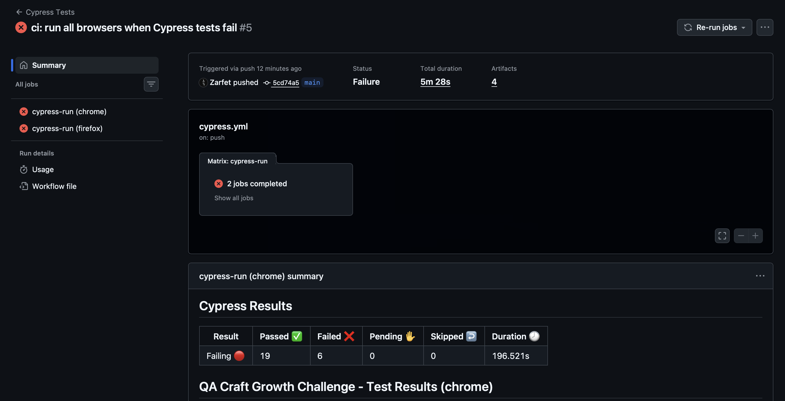

PUBLIC QA CASE STUDY
Risk-based coverage strategy
Prioritised purchase, registration, and authentication coverage based on change risk and user impact.
13 years making sure digital products work, and make sense. I build test strategies and automation frameworks for teams that need quality without the bottlenecks.

How I work
Start with what matters, not a list of tools.
I start with risk: what can fail, who it affects, and where the team needs confidence.
I build quality into delivery, from discovery and acceptance criteria through release.
I automate the repeatable and protect time for product judgement, usability, and real-world edge cases.
My UX background helps me see not only whether something works, but whether it makes sense for the person using it. Manual QA and quality strategy are my foundation; automation speeds up repeatable checks. AI supports planning and implementation, always with human review of scope, expected behaviour, and results.
PUBLIC QA CASE STUDY
Prioritised purchase, registration, and authentication coverage based on change risk and user impact.
PROFESSIONAL WORK · ANONYMISED
Cypress migration checks and visual regression workflows for critical UI areas, across desktop and mobile viewports.
PUBLIC PROJECT
Cypress checks for critical e-commerce journeys, with reports and cross-browser CI that make failures visible early.
PUBLIC PROJECT · AI-ASSISTED
AI-assisted test development, with human review of scope, expected behaviour, assertions, and results.
Professional work is anonymised to protect client confidentiality.
Experience
Built QA processes and Cypress automation for enterprise releases. Automation made critical flows repeatable before deployment, reduced manual effort, and gave teams earlier feedback. Coordinated distributed teams and mentored junior QA engineers.
Led QA across concurrent Agile projects, introducing Cypress automation, quality metrics, and release-readiness practices.
Validated responsive web applications across front-end and back-end flows, shaping test strategy and acceptance criteria for major releases.
Prioritised high-risk campaign-platform testing, established baseline QA practices, and translated technical issues into stakeholder impact.
Based in Barcelona. Open to full-time roles and collaborations in tech companies operating in European or global markets.

PUBLIC QA CASE STUDY
Automation starts with a judgement call: which journeys need confidence first. This strategy prioritised checkout, registration, and authentication around planned product changes and user impact.
ScopeCritical purchase, registration, and authentication flows.
ApproachCoverage evolves with the roadmap instead of treating every test equally.
ValueManual QA judgement shapes where automation is most useful.


PROFESSIONAL WORK · ANONYMISED
Visual checks compare key UI areas against an approved baseline across desktop and mobile viewports. They make unexpected interface changes visible without replacing human review.
CoverageCritical pages and shared interface areas across responsive breakpoints.
SignalImage differences are measured against a defined threshold and reviewed in context.
PrivacyProject and client identifiers have been removed from the evidence shown here.


PUBLIC PROJECT
This suite validates key e-commerce journeys locally and in GitHub Actions across Chrome and Firefox. A failing run is useful evidence: it tells the team where to investigate before release.
ExecutionCritical scenarios run end to end, with a readable HTML report.
CICross-browser runs complete even when one browser surfaces failures.
OutcomeResults distinguish working paths from issues that need product or engineering attention.

PUBLIC PROJECT · AI-ASSISTED
AI can turn a defined scenario into a starting point for test code. QA remains responsible for deciding what matters, reviewing the implementation, and interpreting the result.
PlanTest scenarios define the user journey, expected behaviour, and risk before implementation.
GenerateBrowser interactions provide the raw material for Playwright code and semantic locators.
ReviewHuman review validates scope, assertions, and whether the test reflects intended product behaviour.
VerifyThe suite runs across Chromium, Firefox, and WebKit, with an HTML report for the final evidence.